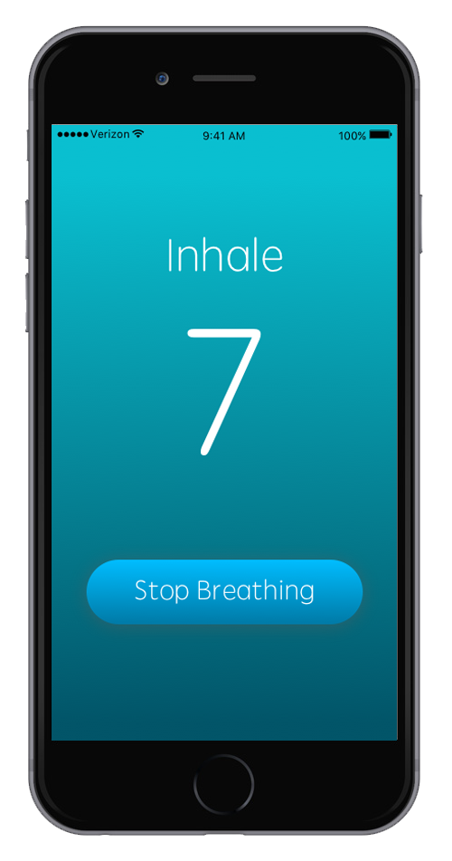
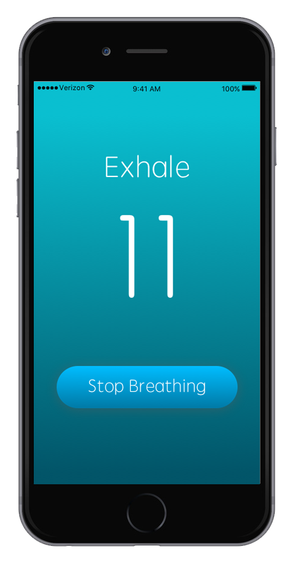
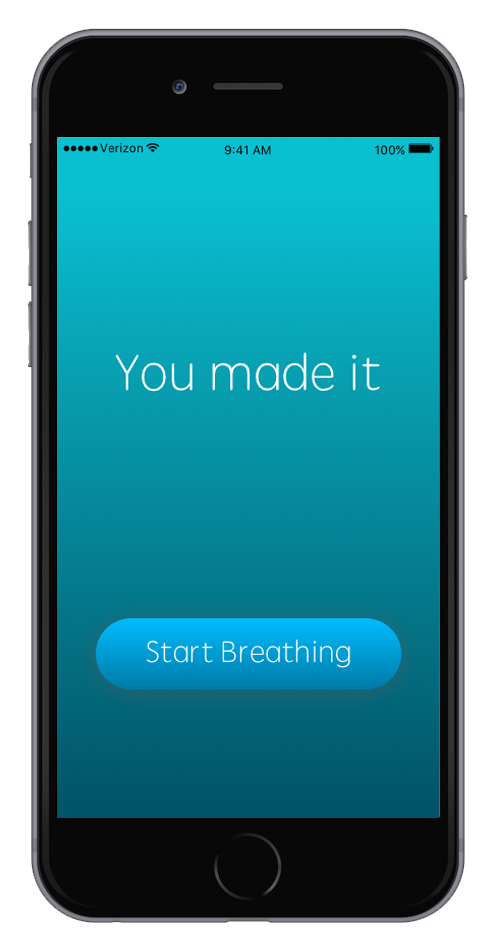
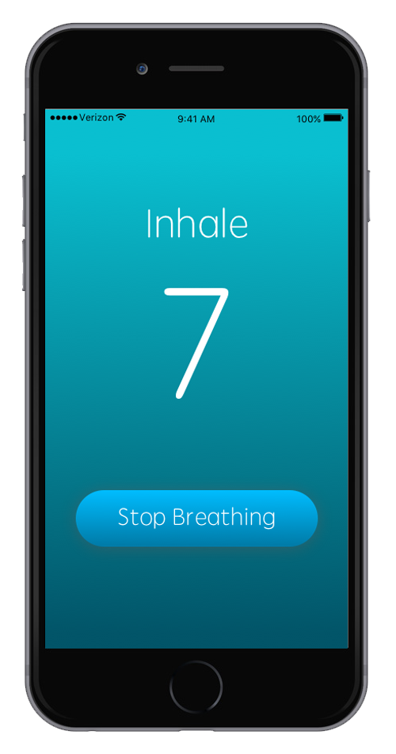
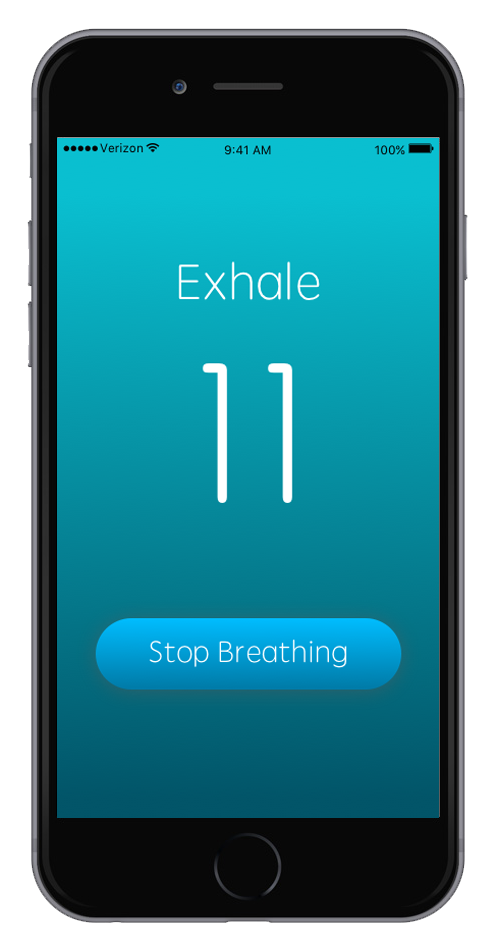
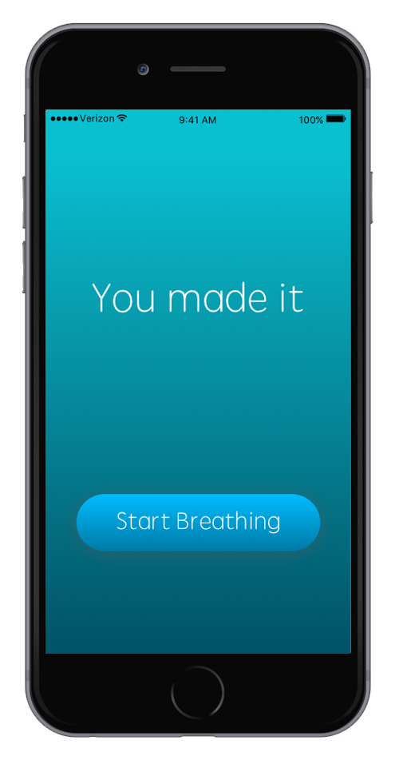

Breathe - Mobile UX/UI Project
Breathe is a personal project I worked on to help aid anxiety attacks or any other form of mental breakdown.
The project was designed using Sketch and was put together with InVision.
Research
I came across some data that explained the 7-11 breathing method, where inhaling for 7 seconds and exhaling for 11 seconds is proven to help calm a person during an anxiety attack or any other from of distress.
With this information, I decided to design the functionality of the application around this concept.
 





The Design
One aspect I really wanted to maintain with Breathe is being very quick to the point. I didn't want any delay in the process of opening the application and had it go straight to the functionality.
Also interesting to note that a big reason why many people suffer from breathing troubles during an attack is the shock actually makes the person forget to inhale, which is why that's the first directive the user sees when opening the application.
With a clear CTA (Call to Action), the application is designed to be very easy to use and provide swift aid.
Try out the prototype here!
Back to Home Next Project